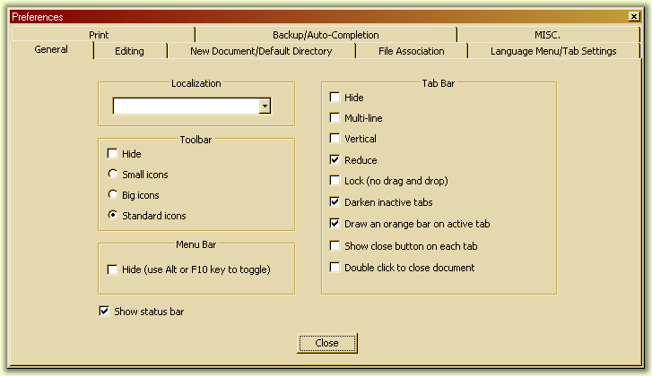

Preferences
You
can configure many aspects of Notepad++ using the Preferences dialog.
The dialog consists of multiple tab which contain options that are
relevant to some aspect of Notepad++ (for instance, the interface or
backup options).

The
general settings control the look of the main interface. You can
control the Tab Bar, the Tool Bar, the Status Bar and the menu from
here, as well as the current ...
- Localization:
-
This dropdown list shows all the languages which you can use for Notepad++ to speak your language. If you click on one of these languages, all user interface elements are instantly translated into that language. The various localisation files are in the Localization subfolder of Notepad++'s install folder.
- Tool bar:
-
-
Hide
- Check the hide checkbox to completely hide the tool bar.
The
following choices show immediate results, but sometimes a restart is
required to load the correct icons:
- Small
icons - Notepad++ will use the small icon set for the toolbar. This
can be the built-in icon set or custom icons.
- Big icons - Notepad++ will use the large icon set for the toolbar. This
can be the built-in icon set or custom icons.
- Small
standard icons - These are the default built-in icons. This is also
the only option that will show any tool bar icons registered by
plugins.
- Menu bar:
- Hide
- If you check this option, the menu bar will automatically hide.
To (temporarily) show the menu bar, press the Alt key or the F10 key
to give the menu focus. Selecting an option, pressing escape or
giving another window the focus will hide the menu again.
- Status bar:
- Show status bar - Check the option to show the status bar.
- Tab bar:
- Hide
- Checking this option will hide the tab bar. You can still open
multiple documents but you have to switch using shortcuts rather that
using the tab bar.
- Multi-Line
- Checking this option will cause the tab bar to draw multiple rows
of documents if they cannot all be displayed in a single row.
Otherwise a pair of scroll arrow buttons will appear. Note that the active document
will always be on the bottom row.
- Vertical
- Checking this option will rotate the tab bar 90°
counterclockwise and place it at the left side of the screen.
- Reduce
- If checked the tab bar will use the default font and icon size.
Unchecking will cause it to use a larger font and larger icons.
-
Lock
- Checking this will disable the ability to sort documents by
dragging the tabs around.
- Draw the inactive tabs - If checked, inactive tabs will be drawn using a
custom background color (see Settings, Styler Configurator).
- Draw
the orange top bar - Checking this will draw a (by default) orange
line on top of active tabs (see Settings, Styler Configurator).
- Enable
close button on each tab - Checking this will add a close button on
each tab. Clicking it will close that tab.
- Double
click to close document - If checked, doubleclicking on a tab will
close it.
Editing
These
settings affect the behaviour and look of Scintilla, the edit
component of Notepad++.
- Caret settings
-
-
Width
- Set the width in pixels of the caret, or change it into a block
which is the size if the current character (if printable, otherwise
the size of the space character).
- Blink
rate - Change from fast (F) to slow (S). Moving all the way to slow
will stop the blinking.
You can change the caret color with the Styler Configurator.
- Multi-Editing
- You can enable or disable this feature through the checkbox. This both controls the ability to select multiple areas (see Selecting text) and to get typed text mirrored in all the areas in the selection.
The
following options are changed per view (See Multi View). Select the
view to adjust form the combo box.
- Folder margin style
- The
style of the icons that indicate folding (See Folding). Select from 4
types.
- Vertical Edge Setting
- Show
vertical edge - Checking this will draw a vertical edge throughout
the document.
Mode
- Line
mode - If this mode is set, the edge will be drawn using a line in
the background
- Background
mode - If this mode is set, the edge will be drawn by changing the
background color of characters that are past the edge. You can change the color with the Styler Configurator.
- Number
of columns: The distance in columns (as determined by the size of the
space character) at which the edge will be drawn.
- Other options
- Display
line number margin - If checked, line numbers will be drawn. You can change the color with the Styler Configurator.
When shown, the line number margin can accommodate three digits, and will grow as needed to display numbers in a higher range.
- Display
bookmark margin - If checked, the bookmark margin will be drawn.
-
Active
current line highlight - If checked, the line at which the caret is
present will be drawn with a special background color. You can change the color with the Styler Configurator.
New
Document/Default directory
These
options change the way new documents are created and what the default
Open/Save directories will be.
- New document:
-
Encoding:
Allows
to choose what encoding to use (see Encoding).
- Format:
Allows
to choose what end-of-line format to use (see Newline Format).
- Default language: defines which highlighter will be used for any newly created document. The dropdown list mirrors the Language menu. However,
user defined languages and external languages cannot be selected.
- File
Open/Save Directory:
- The File Open/Save Directory, or Default
Directory, controls what directory Notepad++ looks in when opening or
saving files. Please note that the Default
directory is not the same as the Current Directory (Working
Directory) Notepad++ uses. Do not make assumptions about Notepad++
Current Directory.
- Follow
the current document - If this option is selected, the default
directory will be the directory of the currently active file. If the
file is a new, unsaved document, this will be Notepad++' directory.
- Remember
the last operation directory - If this option is selected, the
default directory will initially be the directory Notepad++ was
started in (you can control this by adjusting the shortcut you use
for Notepad++) and only change when browsing for files (to open or
save a file).
- Custom
- The default directory can be set to a fixed path. Browse for a
path or type it yourself. If the path is invalid, Notepad++'
directory will be used. You are allowed to use Environment Variables, using the $(var-name) syntax as usual.
File
Association
You
can associate files with Notepad++ so opening those files will start
Notepad++. Select a type of file, then select the desired extension
and press the left arrow to associate the file. To add a custom type
of file, select customize, enter the extension and press the -> button.
To remove the association, select the extension to dissociate and
press the arrow next to the garbage can.
Language Menu/Tab settings
You
can select the languages that are available from the menu. In
the Available Items list are the languages that are currently
visible. To hide a language form the menu, select it and press the
-> button to put it in the Disabled Items list. Add the
language again by selecting it from the Disabled Items list and
pressing the <- button.
The appearance of the Language menu can be further controlled by the Make Language menu Compact checkbox. When checked, languages whose names start by the same letter are grouped into a submenu, rather than being all lumped in the menu proper.
Tab settings can be adjusted on a per language basis. The right hand list has all built-in languages, as well as a topmost (Default) entry. The latter applies to all languages which don't have a custom setting, as well as to all user defined languages. The frame below allows adjusting tab settings for the selected language:
- Tab size - Size in space characters of a tab character in the document.
- Replace
by space - Checking this will cause any tabs added to be in the
form of spaces, up to the amount as determined by the Tab size
setting.
Print
Use
these settings to adjust the layout and colors used when printing a
document, as well as the page header and footer text. This can be any regular string or a variable that will change depending on the printed document.
-
Print
line number - If selected, linenumbers will be printed aswell.
-
Colour
Option:
- WYSIWYG
- print colours exactly as they are on the screen.
- Invert
- This will print the document with the background color inverted
(white becomes black for instance, and v.v.) and the default
foreground color inverted. All other colors will remain the same.
- Black
on white - All text will be printed black and a white background.
- No
background color - This will print all the text colored, but any
background colors (including the default color) will be printed
white.
- Variables
-
You can use Variable:
variable text inside the current header/footer.
There are a few default
variables listed, but you can also use any variable used by the Run
dialog (see Commands) as well. The syntax
is the same. To add some predefined variable from the dropdown, click
Add. The name will automatically be escaped.
- Header:
- Control
the header text. If any header text is present, it will be separated
from the document with a line. Use
the various edit controls to adjust the text added to the header. You can add
text in the left aligned, right aligned and centered sections.
The
controls below control the font used by the header.
- Footer:
- Control
the footer text. See Header for more information.
Backup/Auto-Completion
- Backup:
- Control
backup behaviour. You can instruct Notepad++ to automatically make a
backup of every file if you save any modifications.
- None
- No backups are made.
- Simple
backup - A backup is saved to a file with the same name and .bak
added as extension (the original extension is preserved).
- Verbose
backup - Like simple backup, but before the .bak extension a short
date and timestamp is added.
- User
custom backup directory - If checked, a custom backup directory is
used instead of saving to the same directory the file resides in. If
the path is invalid the directory the file resides in will be used.
- Auto-completion:
- See
Auto-Completion on what Auto Completion is.
- Enable
Auto-completion on each input - If checked, Notepad++ will try to
autocomplete the current word being typed based on how much is
already written.
- Function
Completion : try to complete the current word using the list of
functions of the current language.
- Word
completion : try to complete the current word using the words in the
document.
- From
#th characters: Enter amount of characters needed before Notepad++
tries to auto-complete the current words. Allowed values range from 1
to 9.
-
Function
parameters hint on input - If checked, when a character is added
that marks the start of a list of arguments of the currently typed
function, the function parameters calltip will be shown.
MISC
These
settings control other aspects of Notepad++.
- History File Setting:
- Max
number of history file # - Any number from 0 up to 30. Controls the
amount of files that are saved in the history.
- Don't
check at launch time - If checked, Notepad++ will not verify the
validity of the files in the history. If unchecked, Notepad++ will
check the existence of each file. Recommended to be turned on in case
of networked files.
- Document switcher:
(See
Document Switcher)
- Enable
- Enable the document switcher.
- Enable
MRU behavior - Enables the MRU style sort of files in the document
switcher.
- Clickable link settings:
- This feature optionally makes web addresses starting with http:// clickable. Double clicking opens that address in your browser, if any is
installed and registered.
-
Enable
- If enabled, http:// addresses are clickable as soon as they have been typed and caret leaves them.
- Don't
draw underline - If enabled, the address will be drawn without an
underline. Underlining is the default.
- File Status Auto-detection:
- Automatically
checks the status of each opened file when Notepad++ is activated
from the background.
-
Enable
- Check to enable status detection.
- Update
silently - If a change to a file is detected (modified contents),
Notepad++ will reload the file without asking.
- Scroll
to the last line after update - If checked, when a file is reloaded
after an external modification is detected, it will be scrolled to
the last line (useful for tailing log files).
- Highlight matching tags:
- Tag
highlighting is used for HTML/XML languages. When the cursor is
located inside or at a tag, corresponding tag entries will be
colorized. Change the colors using the Styler Configurator.
-
Enable
- Check to enable tag highlighting.
- Highlight
tag attributes - If checked, the attributes of a tag will be
colorized as well.
- Highlight
comment/php/asp zone - If checked, tags inside a php/asp zone will be
matched as well.
- Sessions
- Remember
the current session for next launch - If checked, the all the files
opened in Notepad++ will be opened again if Notepad++ is closed.
-
If an extension is entered in
Session
file ext, Notepad++ will try to open
these files as session files instead of regular files. This allows
you to simply provide a session file via the command line or any
other method of opening a file to load a session into Notepad++.
- Other options
-
Enable Notepad++ auto-updater: If checked, Notepad++ will attempt to find about an update at startup. You have the option of postponing the upgrade if one is found.
-
Auto-indent -
If checked, adding a new line will automatically indent that line
if any line with text before it has indentation as well. The
indentation will then be matched.
-
Minimize
to sys tray - If checked, minimizing Notepad++ will cause it to be
hidden from the taskbar and an icon to be added to the system tray
(notification area). Clicking the icon will bring Notepad++ back to
the foreground.
- Smart
highlighting - If checked, any word that matches the currently
selected word in the screen will be highlighted. You can control the
color using the Styler Configurator.
- Show
only filename in titlebar - If checked, instead of the full path to
the active file only the filename will be displayed.